Executive Members
| 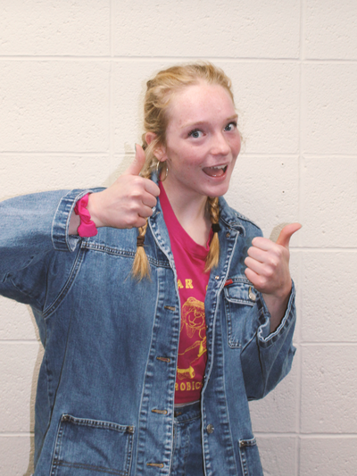 |
Student Body PresidentYonotan (Senior)Hope Nelson is the Student Body President at Grinnell High School. She is involved in a vast amount of activities around the school ranging from volleyball to speech. Come to her if you have any thoughts or questions about the high school! |
| 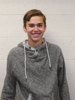 |
Student Body Vice PresidentPayal Patel (Senior)Payal Patel is a Student Body Vice President. The sports that she's in are Cross Country, Basketball, and Soccer. The committees she is involved in are Homecoming Committee, Blood Drive Committee, and Mental Health Committee. |
| 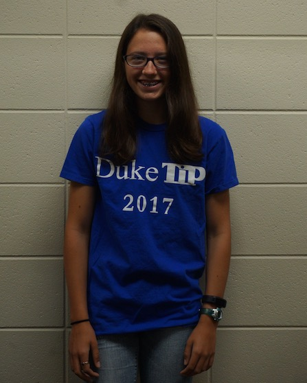 |
Student Body SecretaryMary Blanchard (Senior)Mary Blanchard is involved in cross country, speech and theatre, soccer, StuCo (probably), band, and choir. She works as a soccer referee and at Dari Barn. Mary enjoys running, hanging out with her friends, playing with her dog Waldo, and just having a good time. |
| 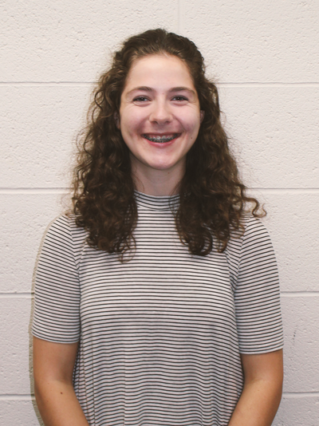 |
School Board LiaisonMaria Amador-LacsonMaria is chair of the Mental Health Committee. She is also the School Board Liaison, so let her know if you need anything brought up to the Board. |
Senior Class

|
Senior Class PresidentTheresa CrawfordTheresa is the Senior Class President and is excited to be on Student Council. If you have any questions about the Invisible Closet, contact her! |
| 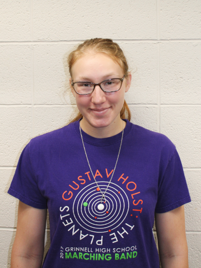 |
Senior Class RepresentativeMicah Benning-ShorbThis is Micah's first year of student council. During the course of the year, Micah looks to improve her school greatly. |
| 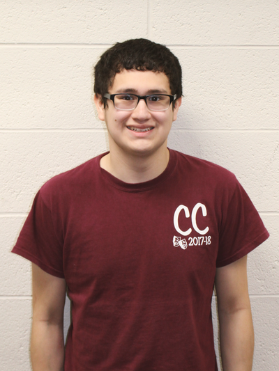 |
Senior Class RepresentativeAidan BrownellAidan Brownell is a junior representative that is active in three sports and choir. He enjoys cross country, swimming, and soccer. If you have any recommendations or questions about Student Council, don't hesitate to ask! |
| 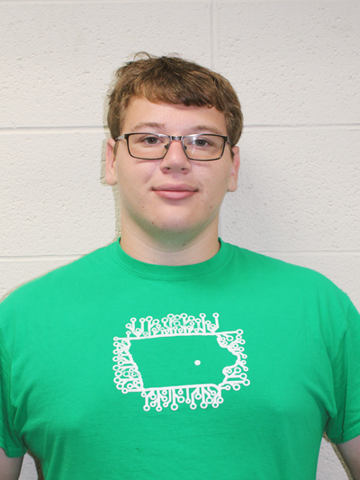 |
Senior Class RepresentativeAlana FergusonAlana is also involved in Ambassadors, Youth Media Advisory Council, and choir. She is excited to work on projects through Student Council to better our school. |
| 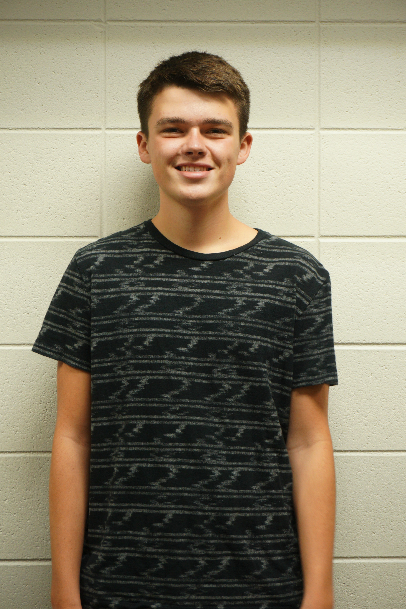 |
Senior Class RepresentativeLewis JollyThis is my second year being in student council and I hope to have a positive affect on the school. |
Junior Class
| 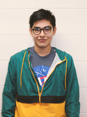 |
Junior Class PresidentBarrett EdwardsHe is the junior class president. This is his third year on student council and he thoroughly enjoy being a part of this group. He is on the homecoming committee, green committee, and mental health committee. Feel free to ask him questions, and make suggestions!! |
| 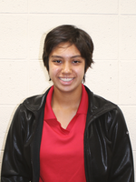 |
Junior Class RepresentativeMaria Amador-LacsonIf you have any concerns or ideas regarding the Mental Health committee, Maria is the chair this year so don't be afraid to bring anything up to her! |
| 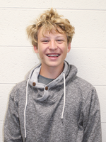 |
Junior Class RepresentativeAidan BrownellAidan Brownell is a senior representative that is active in three sports and choir. He enjoys cross country, swimming, and soccer. If you have any recomendations or questions about Student Council, don't hesitate to ask! |
| 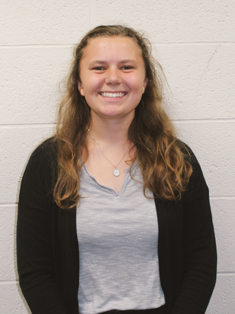 |
Junior Class RepresentativeTheresa CrawfordTheresa Crawford is a junior class representative! Besides student council, she is also involved in cross country, color guard, FFA, tennis, Large Group and Individual Speech, Curtain Club and Thespian troupe. Outside of school she is a part her church, her local 4H club, State 4H Council, and studio dance. She is very excited to be involved in Student Council this next year! |
| 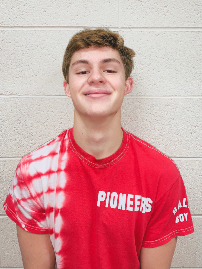 |
Junior Class RepresentativeLewis JollyLewis is a junior class representative. One of his main initiatives he would like to see happen is to get free condoms in school for everyone. |
Sophomore Class
| 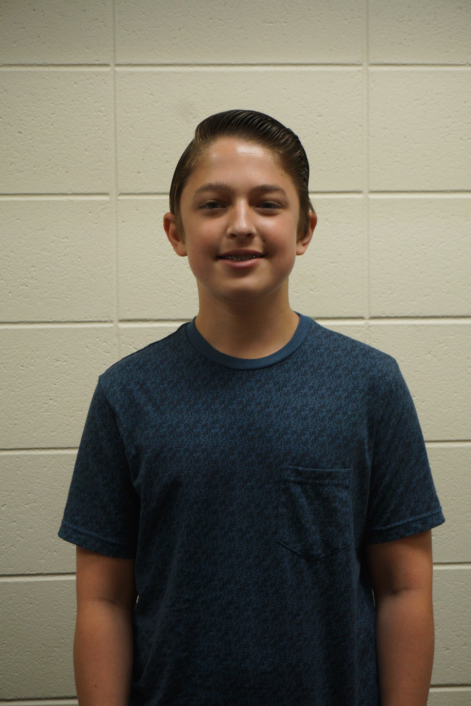 |
Sophomore Class PresidentBarrett EdwardsBarrett is the GHS Sophomore Class president. He enjoys participating in several extra circular activities including: Band, Jazz Band, Choir, Speech, Theater activities, Debate, Model UN, Diversity Club, and GHS feminism. He is excited to be on student council and is open for any questions, requests, or concerns. |
| 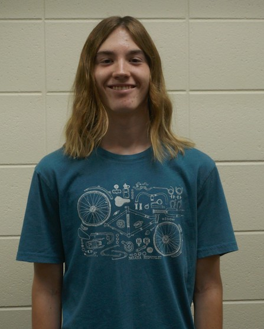 |
Sophomore Class RepresentativeTanner AlgerTanner Alger is in student council because he likes to do things that make a difference. If you want something done, find him and he'll do his best. |
Sophomore Class RepresentativeCole McGriffCole McGriff plays sports. He likes to go to school. |
|
| 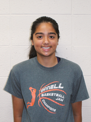 |
Sophomore Class RepresentativePayal PatelPayal Patel is a Sophomore Class Representative. The sports that she's in are Cross Country, Basketball, and Soccer. |

|
Sophomore Class RepresentativeEli RoseEli Rose like to play sports. His favorite is wrestling. |
Freshman Class
| 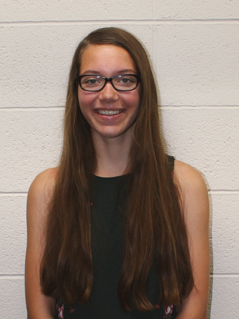 |
Freshman Class PresidentThea LarssonThea Larsson is the Freshman Class President. She participates in cross country, track and field, swimming, 4-h, band, and choir. |
| 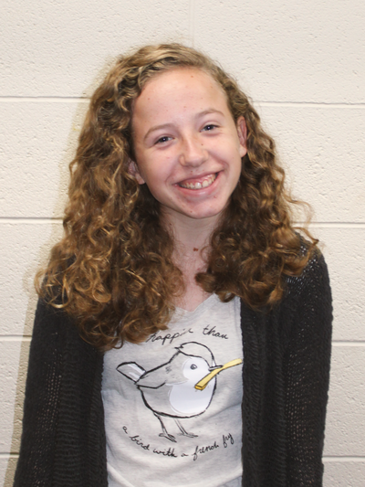 |
Freshman Class RepresentativeBridget BlanchardBridget Blanchard is a representative for the freshman class. Some other activities that she is involved in include cross country, soccer, band, and choir. |
| 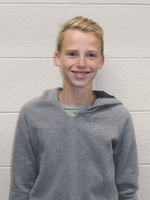 |
Freshman Class RepresentativeJacob GosselinkJacob Gosselink is a fun, easy person to talk too! He enjoys hanging out with his friends and his dog. |
| 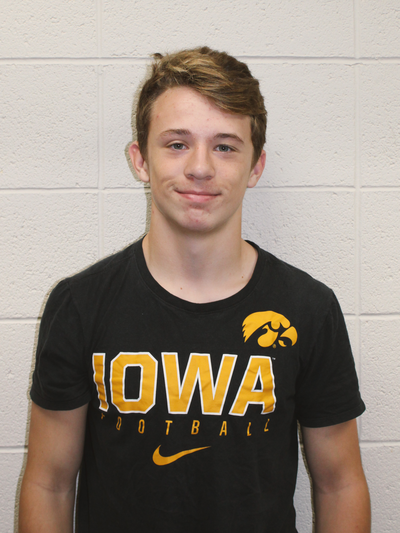 |
Freshman Class RepresentativeJosh OsborneJosh likes to play sports and go to school. These things appeal to him because he can see his friends and learn new things. |
| 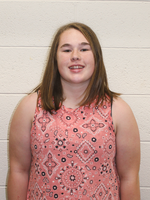 |
Freshman Class RepresentativeMaddy StroversMaddy is a student council representative. She is involved in basketball, volleyball, track, and student council. |